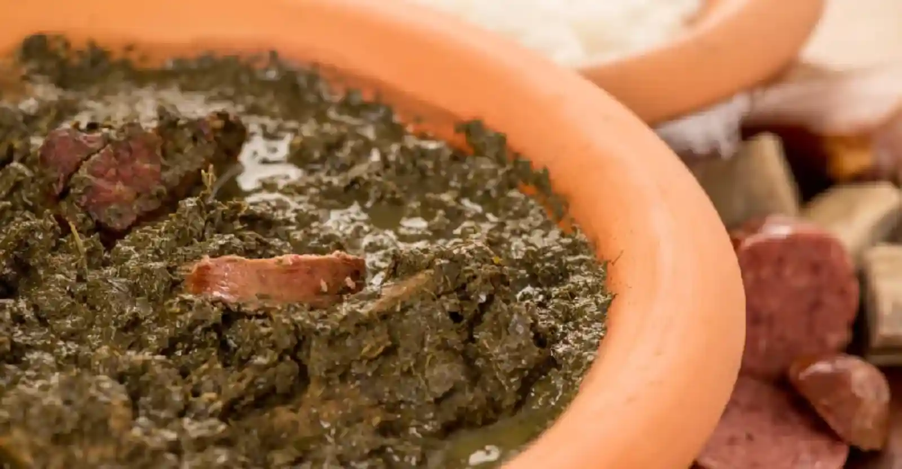

CONHEÇA MAIS:
OS PRATOS TÍPICOS DA REGIÃO NORTE
Tacacá
Pará e Amazonas
Tacacá
Ingredientes
- Tucupi
- Goma de mandioca
- Jambu
- Camarão seco
- Alho e pimenta a gosto
Modo de preparo
- Ferva o tucupi com alho e temperos.
- Cozinhe o jambu até ficar macio.
- Prepare a goma de mandioca até formar um caldo espesso.
- Monte em uma cuia com tucupi, goma, jambu e camarão.
Importância: O tacacá tem raízes nos conhecimentos indígenas sobre a mandioca e se tornou um dos principais símbolos da culinária amazônica. O ofício das tacacazeiras da Região Norte foi reconhecido pelo Iphan como Patrimônio Cultural do Brasil.

Pato no Tucupi
Pará
Pato no Tucupi
Ingredientes
- 1 pato
- Tucupi
- Jambu
- Alho
- Cebola
- Pimenta e sal
Modo de preparo
- Tempere e asse o pato até dourar.
- Corte a carne em pedaços.
- Ferva o tucupi com os temperos.
- Acrescente o pato e cozinhe por alguns minutos.
- Finalize com o jambu.
Importância: O prato combina técnicas e ingredientes de diferentes tradições. O tucupi, produzido a partir da mandioca-brava, representa a presença dos conhecimentos indígenas na culinária paraense.

Maniçoba
Pará
Maniçoba
Ingredientes
- Folhas de mandioca trituradas
- Carne-seca
- Linguiça
- Bacon
- Costelinha ou outras carnes
- Temperos
Modo de preparo
- Cozinhe as folhas de mandioca por vários dias, seguindo o preparo tradicional.
- Acrescente as carnes e os temperos.
- Cozinhe lentamente até tudo ficar bem apurado.
- Sirva quente com arroz e farinha.
Importância: A maniçoba é fortemente associada à culinária paraense e está presente em festas e celebrações. Seu preparo tradicional também demonstra a importância dos conhecimentos sobre a mandioca.

Tambaqui Assado
Amazonas
Tambaqui Assado
Ingredientes
- 1 tambaqui
- Alho
- Limão
- Sal
- Pimenta
- Ervas e temperos
Modo de preparo
- Limpe o peixe e tempere com limão, sal e alho.
- Deixe marinar por alguns minutos.
- Asse na brasa ou no forno até dourar.
- Sirva com acompanhamentos.
Importância: O tambaqui é um peixe muito importante na alimentação amazônica. Seu preparo na brasa valoriza o sabor do peixe e mostra a relação da população com os rios da região.

Pirarucu de Casaca
Amazonas
Pirarucu de Casaca
Ingredientes
- Pirarucu
- Farinha de mandioca
- Banana
- Cebola
- Tomate
- Pimentão
- Temperos
Modo de preparo
- Cozinhe ou asse o pirarucu e desfie.
- Prepare os temperos refogados.
- Monte camadas de peixe, farinha e banana.
- Leve ao forno rapidamente para finalizar.
Importância: O prato utiliza o pirarucu, um dos grandes peixes de água doce da Amazônia. Sua preparação mostra como os peixes dos rios foram incorporados a receitas mais elaboradas.

Açaí com farinha de mandioca
Pará e Amazonas
Açaí com farinha de mandioca
Ingredientes
- Polpa de açaí
- Farinha de mandioca
- Peixe ou outro acompanhamento, opcional
Modo de preparo
- Coloque a polpa de açaí em uma tigela.
- Misture ou acompanhe com farinha de mandioca.
- Sirva com peixe ou outros alimentos, seguindo o costume regional.
Importância: Na Amazônia, o açaí tradicionalmente pode ser consumido como alimento, e não apenas como sobremesa. O fruto está profundamente ligado à alimentação e aos costumes das comunidades amazônicas.